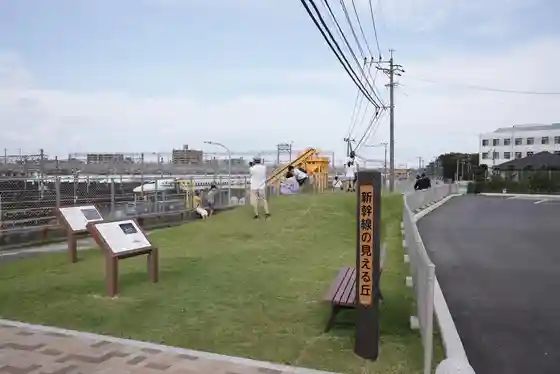
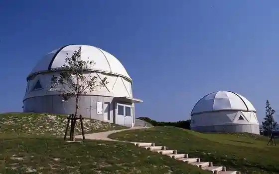
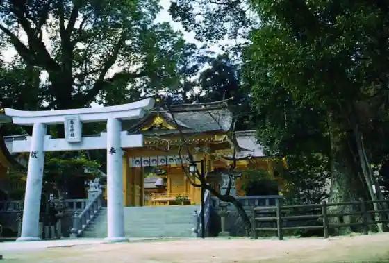
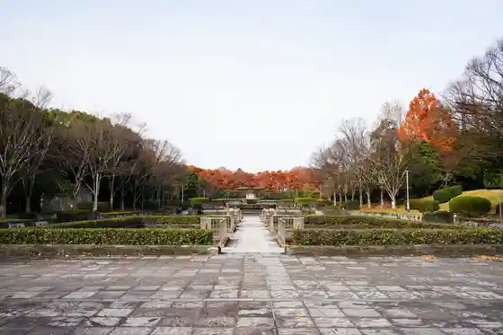

Hakataminamieki
Kasuga, Fukuoka · 092-431-0202 · Official / source link
Shinkansen no Mie Ru Oka (Kasuga Nishi Tamokuteki Hiroba Park)
Kasuga, Fukuoka · 092-571-3234 · Official / source link

Nakoku no Oka History Museum (Nakoku no Oka Rekishi Park)
Kasuga, Fukuoka · 092-501-1144 · Official / source link

Kasuga Shrine (Kasuga)
Kasuga, Fukuoka · 092-581-7551 · Official / source link

Ken'ei Kasuga Park
Kasuga, Fukuoka · 092-573-4200 · Official / source link

Nichi Hai Tsuka Burial Mound
Kasuga, Fukuoka · 092-501-1144 · Official / source link
Shirozu Oike Park
Kasuga, Fukuoka · 092-584-1111 · Official / source link
Sugu (Sugu) Okamoto Iseki
Kasuga, Fukuoka · 092-501-1144 · Official / source link
Utoguchi Kawaragama Tenjikan (Kasuga no Bori Kama Taiken Plaza)
Kasuga, Fukuoka · 092-501-1144 · Official / source link
Sumiyoshi Shrine (Kasuga)
Kasuga, Fukuoka · 092-501-1144 · Official / source link
Kido Saketen
Kasuga, Fukuoka · 092-581-1456 · Official / source link
Shirozu Ike
Kasuga, Fukuoka · 092-584-1111 · Official / source link
Mizu Castle Ruins (Dai Tsuchii Mizu Castle Ruins)
Kasuga, Fukuoka · Official / source link
Supuringuhoru (Kasuga Fureai Bunka Center)
Kasuga, Fukuoka · 092-584-3366 · Official / source link
Suitei Kasuga Dorui (Kasuga Shrine)
Kasuga, Fukuoka · 092-501-1144 · Official / source link